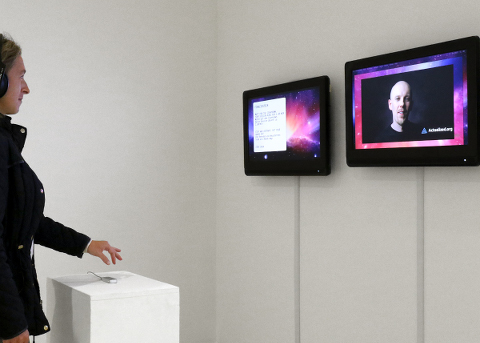

Barbara Herold

Barbara Herold * 1977 in München. Studium der
Freien Kunst/Medienkunst an der Hochschule der Bildenden Künste saar
in Saarbrücken. Ausbildung am Glamorgan Centre for Art & Design
Technology, Digital Video Design, Pontypridd/GB. Anschließend
Studium der Kunstpädagogik, Kunstgeschichte, Romanische Philologie
an der LMU München. Barbara Herold lebt und arbeitet in
München.
barbaraherold.net
Ausstellungen (u.a.): 2. Kunstbiennale, Haus der Kunst, München 2015 – Tanzfestival Saar, Saarländisches Staatstheater 2015 Kunstraum Niederösterreich, Wien 2016 – Palazzo Pisani, Venedig 2017 Offene Ateliers am Domagkpark, München 2017 – Karin Wimmer Contemporary, München 2017
Aura Sell Out
2016 – Interaktive AV-Installation – Triptychon
Konzept, Video, Installation: Barbara Herold
In dem sakralen Video-Environment steht das Unfassbare, Magische, Auratische im Zentrum des Mensch-Maschinen-Dialogs. Über Gestik kommunizieren die Besucher mit einem DIY-„Seelen“-Analyse-Automaten und begegnen nach Daten-Auswertung ihrem virtuellen Gegenüber, In Video-Sessions geben sie Anleitung zum Aura-Sehen, führen energetische Reinigungen und Meditationen durch und unterrichten in Erleuchtung und Realitätsgestaltung. Aura ist ihr Business.